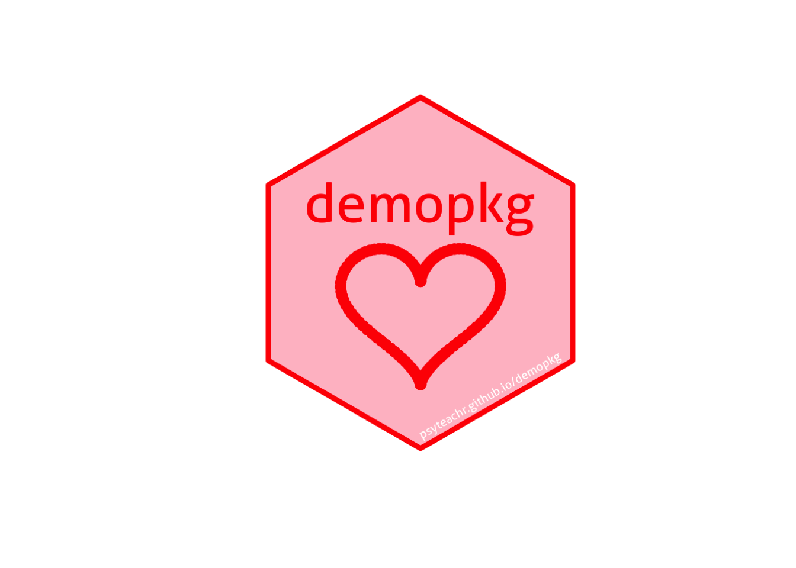

7 Pkgdown Websites
Create a package website using pkgdown.
7.1 Set up pkgdown
The following function makes some edits to Rbuildignore (telling R to ignore these files when building the package) and .gitignore (telling git to ignore the docs directory).
If you already have GitHub set up with your package, use usethis::use_pkgdown_github_pages() instead. If not, we’ll cover how to link your site to GitHub in Chapter 9.
You’ll see some output that looks like this.
✔ Setting active project to '/Users/lisad/rproj/debruine/demopkg'
✔ Adding '^_pkgdown\\.yml$', '^docs$', '^pkgdown$' to '.Rbuildignore'
✔ Adding 'docs' to '.gitignore'
✔ Writing '_pkgdown.yml'
• Modify '_pkgdown.yml'A file called _pkgdown.yml will open with the following contents.
While it is not required, I like to make a directory called pkgdown and keep all pkgdown-related contents in there.
7.2 Build Site
Now check that everything is set up correctly by building the site.
If you already have GitHub set up with your package, use pkgdown::build_site_github_pages() instead.
You should see something like the following output, and then a webpage will appear in your Viewer pane or a separate window (depending on your preference settings). If you need to open it manually, open docs/index.html in a web browser.
-- Installing package into temporary library --
== Building pkgdown site ======================
Reading from: '/rproj/debruine/demopkg'
Writing to: '/rproj/debruine/demopkg/docs'
-- Initialising site --------------------------
-- Building home ------------------------------
Reading 'LICENSE.md'
Writing '404.html'
-- Building function reference ----------------
Reading 'man/apa_t_pair.Rd'
Reading 'man/demopkg-package.Rd'
Reading 'man/self_res_att.Rd'
-- Building articles --------------------------
Reading 'vignettes/demopkg.Rmd'
Writing 'sitemap.xml'
-- Building search index ----------------------
== DONE =======================================
-- Previewing site ----------------------------If everything is working correctly, this will have automatically organised information from the DESCRIPTION file, the README, function documentation, and vignettes into a website. If you created a vignette called demopkg, this will be available under “Get started”, and any other vignettes will be available under “Articles”. Documentation for each function will be available under “Reference”.
7.3 CITATION file
A citation file is a specially formatted file for specifying the citation to your materials. As always, you can set one up with a usethis function.
This will create a file called CITATION in the directory inst (this is a directory where you can keep supplemental files your package needs). The file contains skeletons for two R functions that create the text shown when someone looks up the citation for your package. You should make this consistent with the information in the DESCRIPTION file.
If your package isn’t associated with a paper, use “Manual” instead of “Article”. Annoyingly, there is no widely accepted BibTex entry type for software, so most people just use a citation to the documentation using the manual type.
I prefer to use the bibentry() function instead of citEntry() because it displays the BibTex version of the citation automatically (note that it uses the argument bibtype instead of entry). The help for this function explains all of the options for citations in detail.
inst/CITATION
citHeader("To cite demopkg in publications use:")
title <- "{demopkg}: Data and analysis from DeBruine (2004)"
url <- "https://psyteachr.github.io/demopkg"
year <- sub("-.*", "", meta$Date)
note <- sprintf("R package version %s", meta$Version)
bibentry(
bibtype = "Manual",
title = title,
author = c(person("Lisa", "DeBruine")),
year = year,
note = note,
url = url,
textVersion = paste0(
"Lisa DeBruine, (", year, "). ", title, ". ", note, ". ", url
)
)Save this file and re-load your package, then check the citation.
To cite demopkg in publications use:
Lisa DeBruine, (2022). {demopkg}: Data and analysis from DeBruine
(2004). R package version 0.0.0.9000.
https://psyteachr.github.io/demopkg
A BibTeX entry for LaTeX users is
@Manual{,
title = {{demopkg}: Data and analysis from DeBruine (2004)},
author = {Lisa DeBruine},
year = {2022},
note = {R package version 0.0.0.9000},
url = {https://psyteachr.github.io/demopkg},
}Now you can build the pkgdown site again to see the citation update. However, this will run all of the vignettes, which might take a long time. You can re-build parts of the pkgdown site instead. Use auto-complete to browse the list of functions that start with build_.
7.4 Logo
You can use any image for a logo, but it’s traditional to make a hex sticker for R packages.
The code below requires the hexSticker package, which is outstanding, but a little tricky to install. It might require installing imageMagick on your computer (not an R package). On MacOS, you might need to install xquartz on your computer (not an R package) and then re-install the R package {sysfont}.
pkgdown/logo.R
# make a heart with math!
t <- seq(0, 2*pi, by=0.05) |> c(0)
heart <- data.frame(
x = 16*sin(t)^3,
y = 13*cos(t)-5*cos(2*t)-2*cos(3*t)-cos(4*t)
)
heartplot <- ggplot(heart, aes(x, y)) +
geom_point(color = "red") +
theme_void()
# customise your hex sticker
hexSticker::sticker(
filename = "inst/figures/logo.png",
# subplot aesthetics
subplot = heartplot,
s_width = 1.0, s_height = .85,
s_x=1, s_y=.75,
# package name aesthetics
package = "demopkg",
p_size = 24,
p_color = "red",
# hexagon aesthetics
h_size = 1,
h_fill = "pink",
h_color = "red",
# url aesthetics
url = "psyteachr.github.io/demopkg",
u_size = 5.4,
u_color = "white"
) |> plot() # preview with plot()
However you make your logo, store the high-resolution version at inst/figures/logo.png. Now you can add it to the package with the following code.
You’ll see the following output and the code for including your logo in the README will be copied to your clipboard. Ignore the warning about the URL for now; we’ll sort that out in Chapter 9.
✔ Setting active project to '/Users/lisad/rproj/debruine/demopkg'
✔ Creating 'man/figures/'
✔ Resized 'inst/figures/logo.png' to 240x278
• Add logo to your README with the following html:
Warning: pkgdown config does not specify the site's url, which is optional but recommended
# demopkg <img src="man/figures/logo.png" align="right" height="139" />
[Copied to clipboard]Open README.Rmd, replace the line # demopkg with the copied text, and run the following code.
If you try to just build_home(), you will get a message like pkgdown can only use images in 'man/figures' and 'vignettes' because the logo hasn’t been copied to the right places. This could also be the problem if you update the logo but it doesn’t change in the pkgdown home page.
7.5 Badges
You’ve probably seen these lines in the README and wondered how you can get some badges.
<!-- badges: start -->
<!-- badges: end -->You can add a badge that describes the lifecycle of your package, from the options “experimental”, “stable”, “deprecated”, or “superceded”. Our demopkg is probably “experimental” :)
✔ Adding Lifecycle: experimental badge to 'README.Rmd'
• Re-knit 'README.Rmd' with `devtools::build_readme()`It will add the following text to your README.Rmd file.
<!-- badges: start -->
[](https://lifecycle.r-lib.org/articles/stages.html#experimental)
<!-- badges: end -->Make sure you re-knit the README and then re-build your pkgdown home page.
Usethis has functions to add badges linking to your package on CRAN, Bioconductor, mybinder.org, or RStudio Cloud. You can also add badges that declare whether your builds are passing various checks, which we’ll discuss in Chapter 8.
The badger package lets you create the code for custom badges, which you can manually paste into the README.
[1] "[](https://doi.org/10.1098/rspb.2004.2824)"badge_custom(
"ORCiD",
"0000-0002-7523-5539",
"dodgerblue",
"https://orcid.org/0000-0002-7523-5539"
)[1] "[](https://orcid.org/0000-0002-7523-5539)"Make sure to add appropriate alt-text in the square brackets after the exclamation point to make your images accessible.
[](https://doi.org/10.1098/rspb.2004.2824)
[](https://orcid.org/0000-0002-7523-5539)